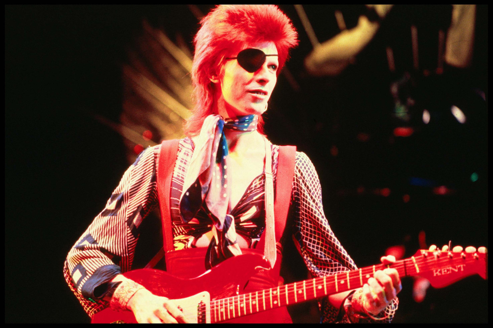

About Gerlion
Gerlion is awesome. He is weird wizard with mental issues.
Gerlion and his friends
Gerlion's Characteristics
- white hair
- He's treated as bad-ass
- He's tryin to be bad-good
Gerlion's friends

Gerlions best friend was Krik.
Click on the links below to read more about them: